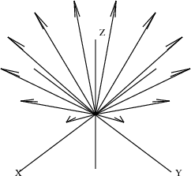

10.5 A Bouquet of Arrows
Let's draw a bouquet of arrows. Each arrow is identical. The arrowheads are uniformly placed on a circle parallel to the
xy-plane. Thus the position of each arrow differs only by the angle
θ,
0≤θ<2π, between the arrow and the
x-axis on the
xy-plane.
Our bouquet is rather special: each arrow has a different color (which won't be evident here, unfortunately). This is arranged by letting the color of each successive arrow be denoted by
θ. In this way, the color of arrows ranges from red to green to violet. Here is a program to draw a bouquet of
n arrows.
drawBouquet(n,title) ==}{}
angle := 0.0@DFLOAT The initial angle
sp := createThreeSpace() Create empty space $sp$
for i in 0..n-1 repeat For each index i, create:
start := point [0.0@DFLOAT,0.0@DFLOAT,0.0@DFLOAT,angle]
the point at base of arrow;
end := point [cos angle, sin angle, 1.0@DFLOAT, angle]
the point at tip of arrow;
arrow := makeArrow(start,end) the $i$th arrow
for a in makeArrow(start,end) repeat For each arrow component,
curve(sp,a) add the component to $sp$
angle := angle + 2*%pi/n The next angle
makeViewport3D(sp,title) Create the viewport from $sp$
Read the input file.
A bouquet of a dozen arrows.
drawBouquet(12,"A Dozen Arrows")
